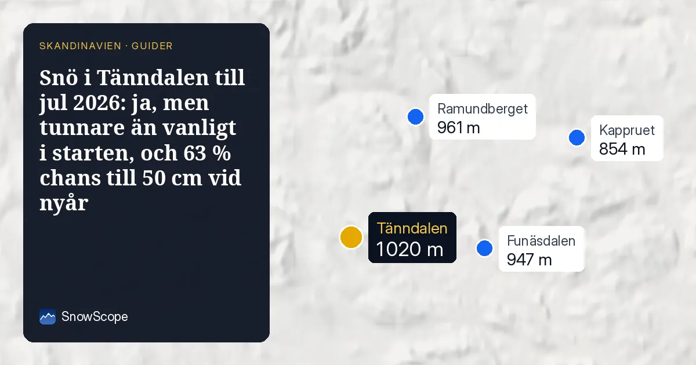

Snö i Tänndalen till jul 2026: ja, men tunnare än vanligt i starten, och 63 % chans till 50 cm vid nyår
Ja, Tänndalen får snö till jul i princip varje år: på juldagen ligger det normalt 49 cm på 888 m, och snö på marken på juldagen har funnits i 100 % av vintrarna. I år börjar det tunt, 11 cm på den höjden mot normala 31 cm, och 19 cm i toppen.
Se snöprognosen för Tänndalen live i SnowScope-appenSnödjup, pudervarningar och 3D-kartan, gratis.
Juldagen i siffror
En jul av fyra har mindre än 41 cm på 888 m, en av fyra mer än 58 cm. På nyårsdagen är det normala snödjupet 55 cm, och i 63 % av 46 vintrar låg det mer än 50 cm då.
Tänndalen ligger högt för svenska förhållanden: byn och liftarna ligger mellan 757 m och 1 020 m, nära den norska gränsen. Det gör att snön kommer tidigare än i de flesta svenska skidorter.
Hur ser december ut i vanliga fall?
Ett normalt år passerar snötäcket 30 cm i slutet av november. Den 8 december är normalvärdet 40 cm, den 15 december 45 cm. Den snörikaste månaden är oftast mars, med omkring 84 cm.
Den bästa vintern i serien var 1987-88, med som mest 129 cm; den magraste 1995-96, med 60 cm.
Varför starten är tunn i år
Hösten har dominerats av högtryck och torr kyla över fjällen, medan snöfallen hamnat längre västerut i Norge. För Tänndalen har det betytt kalla nätter, bra för snökanonerna, men lite naturlig snö.
De närmaste dagarna ändrar inte mycket: omkring 1 cm fram till måndag och 4 cm på sju dagar i toppen.
Juleveckan i Funäsdalsfjällen
Funäsdalsfjällen har ett gemensamt liftkort för Tänndalen, Ramundberget, Funäsdalen och de andra orterna, och just i juletid är det en styrka: om snön är bäst i en by kan man åka dit.
För längdåkare är Tänndalen en av Sveriges mest kända längdorter, med spår som ofta öppnar tidigt på konstsnö och sedan på naturlig snö högre upp på kalfjället.
Mellandagarna och nyår
Mellan jul och nyår brukar snödjupet öka något: från 49 cm på juldagen till 54 cm på nyårsafton och 59 cm på trettondagen. Det är också de mörkaste dagarna på året, med kort dagsljus, vilket gör att de flesta åker på förmiddagen och tidig eftermiddag.
Liftsystemet i Tänndalen är kompakt, och barnfamiljer har korta avstånd mellan boende, skidskola och backar. För den som vill ha mer variation är Ramundberget och Funäsdalen en kort bilresa bort.
Nyårsafton firas ofta med fyrverkerier över byn, och dagen efter är backarna bland de lugnaste under hela vintern, ett bra tillfälle för en lång förmiddag på pisten.
Vanliga frågor om jul i Tänndalen
Blir det vit jul i byn? Nästan alltid. Byn ligger högt, och snön på marken på juldagen har vi sett i 100 % av vintrarna på 888 m. Frågan är hur mycket, inte om.
Går det att åka längdskidor redan före jul? Ja, i de flesta år på konstsnöspåren nära byn, och högre upp så snart naturen fyllt på. Tänndalen satsar mycket på tidiga spår.
Hur ser december ut i år? Torrt och kallt de närmaste dagarna, med omkring 4 cm på sju dagar i toppen. Det ger bra förhållanden för konstsnö men lite ny natursnö.
Hur långt är det? Från Stockholm tar det runt sex till sju timmar med bil, från Östersund ungefär två och en halv. Flyg till Röros i Norge eller Sveg är alternativ.
Vad ska man boka?
Juleveckan och nyårsveckan är de mest efterfrågade av vintern. Med en tunn start kan sista minuten-priser dyka upp i december, men de bästa stugorna nära liftarna försvinner tidigt.
Följ snödjupet varje dag på snösidan för Tänndalen och på Funäsdalsfjällen-sidan.
Tips för skidåkare
- Boka boende nära liften om ni har små barn; juleveckan är kall och mörk.
- Packa pannlampa för längdåkning på eftermiddagen: dagsljuset är kort i december.
- Kolla spårkartan innan ni åker; de första spåren går på konstsnö.
- Jämför med andra fjäll i Finland mot Sverige: snö i 46 vintrar.
Om siffrorna
Snösiffror: SnowScopes snökarta och prognos för i dag och vår historik över 46 tidigare vintrar för varje skidort (en uppskattning för området, inte skidortens egen rapport).
Officiella lavinprognoser: Lavinprognoser (Naturvårdsverket)
Citera den här rapporten
För forskning, undervisning eller press: siffrorna och diagrammen får återanvändas fritt under CC BY 4.0 med den här källhänvisningen.
SnowScope (2026), Snö i Tänndalen till jul 2026: ja, men tunnare än vanligt i starten, och 63 % chans till 50 cm vid nyår, https://snowscope.app/blog/sv/2026/11/tanndalen-jul-2026-snochanser-funasdalsfjallen-vad-46-vintrar-visar.html, hämtad 2026-11-27
SnowScope (Atlas Labs). (2026, November 27). Snö i Tänndalen till jul 2026: ja, men tunnare än vanligt i starten, och 63 % chans till 50 cm vid nyår. SnowScope snow reports. https://snowscope.app/blog/sv/2026/11/tanndalen-jul-2026-snochanser-funasdalsfjallen-vad-46-vintrar-visar.html
BibTeX
@misc{snowscope2026tanndalenjul2026snochans,
author = {{SnowScope (Atlas Labs)}},
title = {Snö i Tänndalen till jul 2026: ja, men tunnare än vanligt i starten, och 63 % chans till 50 cm vid nyår},
year = {2026},
month = nov,
howpublished = {\url{https://snowscope.app/blog/sv/2026/11/tanndalen-jul-2026-snochanser-funasdalsfjallen-vad-46-vintrar-visar.html}},
note = {Published 2026-11-27 19:58 UTC; accessed 2026-11-27}
}· CC BY 4.0 · Metoder, data och verktyg →
Tänndalen: snö och temperatur efter höjd, i vinter jämfört med förra (verktyg) →
Följ Tänndalen
Gratis: ett meddelande när nysnö är på väg, och prognosen varje morgon.